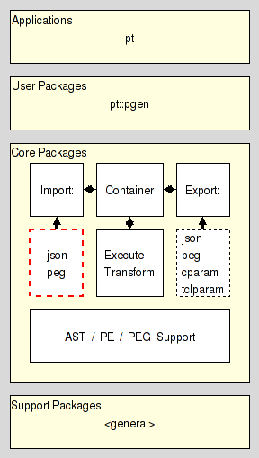

|
ActiveTcl User Guide |
[ Main table Of Contents | Tcllib Table Of Contents | Tcllib Index ]
pt::peg::import::peg(n) 1 "Parser Tools"
Name
pt::peg::import::peg - PEG Import Plugin. Read PEG format
Synopsis
- package require Tcl 8.5
- package require pt::peg::import::peg ?1?
- package require pt::peg::to::peg
Description
Are you lost ? Do you have trouble understanding this document ? In that case please read the overview provided by the Introduction to Parser Tools. This document is the entrypoint to the whole system the current package is a part of.
This package implements the parsing expression grammar import plugin processing PEG markup.
It resides in the Import section of the Core Layer of Parser Tools and is intended to be used by pt::peg::import, the import manager, sitting between it and the corresponding core conversion functionality provided by pt::peg::from::peg.

While the direct use of this package with a regular interpreter is possible, this is strongly disrecommended and requires a number of contortions to provide the expected environment. The proper way to use this functionality depends on the situation:
-
In an untrusted environment the proper access is through the package pt::peg::import and the import manager objects it provides.
-
In a trusted environment however simply use the package pt::peg::from::peg and access the core conversion functionality directly.
API
The API provided by this package satisfies the specification of the Plugin API found in the Parser Tools Import API specification.
- import text
-
This command takes the PEG markup encoding a parsing expression grammar and contained in text, and generates the canonical serialization of said grammar, as specified in section PEG serialization format. The created value is then returned as the result of the command.
PEG Specification Language
peg, a language for the specification of parsing expression grammars is meant to be human readable, and writable as well, yet strict enough to allow its processing by machine. Like any computer language. It was defined to make writing the specification of a grammar easy, something the other formats found in the Parser Tools do not lend themselves too.
It is formally specified by the grammar shown below, written in itself. For a tutorial / introduction to the language please go and read the PEG Language Tutorial.
PEG pe-grammar-for-peg (Grammar)
# --------------------------------------------------------------------
# Syntactical constructs
Grammar <- WHITESPACE Header Definition* Final EOF ;
Header <- PEG Identifier StartExpr ;
Definition <- Attribute? Identifier IS Expression SEMICOLON ;
Attribute <- (VOID / LEAF) COLON ;
Expression <- Sequence (SLASH Sequence)* ;
Sequence <- Prefix+ ;
Prefix <- (AND / NOT)? Suffix ;
Suffix <- Primary (QUESTION / STAR / PLUS)? ;
Primary <- ALNUM / ALPHA / ASCII / CONTROL / DDIGIT / DIGIT
/ GRAPH / LOWER / PRINTABLE / PUNCT / SPACE / UPPER
/ WORDCHAR / XDIGIT
/ Identifier
/ OPEN Expression CLOSE
/ Literal
/ Class
/ DOT
;
Literal <- APOSTROPH (!APOSTROPH Char)* APOSTROPH WHITESPACE
/ DAPOSTROPH (!DAPOSTROPH Char)* DAPOSTROPH WHITESPACE ;
Class <- OPENB (!CLOSEB Range)* CLOSEB WHITESPACE ;
Range <- Char TO Char / Char ;
StartExpr <- OPEN Expression CLOSE ;
void: Final <- END SEMICOLON WHITESPACE ;
# --------------------------------------------------------------------
# Lexing constructs
Identifier <- Ident WHITESPACE ;
leaf: Ident <- ('_' / ':' / <alpha>) ('_' / ':' / <alnum>)* ;
Char <- CharSpecial / CharOctalFull / CharOctalPart
/ CharUnicode / CharUnescaped
;
leaf: CharSpecial <- "\\" [nrt'"\[\]\\] ;
leaf: CharOctalFull <- "\\" [0-2][0-7][0-7] ;
leaf: CharOctalPart <- "\\" [0-7][0-7]? ;
leaf: CharUnicode <- "\\" 'u' HexDigit (HexDigit (HexDigit HexDigit?)?)? ;
leaf: CharUnescaped <- !"\\" . ;
void: HexDigit <- [0-9a-fA-F] ;
void: TO <- '-' ;
void: OPENB <- "[" ;
void: CLOSEB <- "]" ;
void: APOSTROPH <- "'" ;
void: DAPOSTROPH <- '"' ;
void: PEG <- "PEG" WHITESPACE ;
void: IS <- "<-" WHITESPACE ;
leaf: VOID <- "void" WHITESPACE ; # Implies that definition has no semantic value.
leaf: LEAF <- "leaf" WHITESPACE ; # Implies that definition has no terminals.
void: END <- "END" WHITESPACE ;
void: SEMICOLON <- ";" WHITESPACE ;
void: COLON <- ":" WHITESPACE ;
void: SLASH <- "/" WHITESPACE ;
leaf: AND <- "&" WHITESPACE ;
leaf: NOT <- "!" WHITESPACE ;
leaf: QUESTION <- "?" WHITESPACE ;
leaf: STAR <- "*" WHITESPACE ;
leaf: PLUS <- "+" WHITESPACE ;
void: OPEN <- "(" WHITESPACE ;
void: CLOSE <- ")" WHITESPACE ;
leaf: DOT <- "." WHITESPACE ;
leaf: ALNUM <- "<alnum>" WHITESPACE ;
leaf: ALPHA <- "<alpha>" WHITESPACE ;
leaf: ASCII <- "<ascii>" WHITESPACE ;
leaf: CONTROL <- "<control>" WHITESPACE ;
leaf: DDIGIT <- "<ddigit>" WHITESPACE ;
leaf: DIGIT <- "<digit>" WHITESPACE ;
leaf: GRAPH <- "<graph>" WHITESPACE ;
leaf: LOWER <- "<lower>" WHITESPACE ;
leaf: PRINTABLE <- "<print>" WHITESPACE ;
leaf: PUNCT <- "<punct>" WHITESPACE ;
leaf: SPACE <- "<space>" WHITESPACE ;
leaf: UPPER <- "<upper>" WHITESPACE ;
leaf: WORDCHAR <- "<wordchar>" WHITESPACE ;
leaf: XDIGIT <- "<xdigit>" WHITESPACE ;
void: WHITESPACE <- (" " / "\t" / EOL / COMMENT)* ;
void: COMMENT <- '#' (!EOL .)* EOL ;
void: EOL <- "\n\r" / "\n" / "\r" ;
void: EOF <- !. ;
# --------------------------------------------------------------------
END;
Example
Our example specifies the grammar for a basic 4-operation calculator.
PEG calculator (Expression)
Digit <- '0'/'1'/'2'/'3'/'4'/'5'/'6'/'7'/'8'/'9' ;
Sign <- '-' / '+' ;
Number <- Sign? Digit+ ;
Expression <- Term (AddOp Term)* ;
MulOp <- '*' / '/' ;
Term <- Factor (MulOp Factor)* ;
AddOp <- '+'/'-' ;
Factor <- '(' Expression ')' / Number ;
END;
Using higher-level features of the notation, i.e. the character classes (predefined and custom), this example can be rewritten as
PEG calculator (Expression)
Sign <- [-+] ;
Number <- Sign? <ddigit>+ ;
Expression <- '(' Expression ')' / (Factor (MulOp Factor)*) ;
MulOp <- [*/] ;
Factor <- Term (AddOp Term)* ;
AddOp <- [-+] ;
Term <- Number ;
END;
PEG serialization format
Here we specify the format used by the Parser Tools to serialize Parsing Expression Grammars as immutable values for transport, comparison, etc.
We distinguish between regular and canonical serializations. While a PEG may have more than one regular serialization only exactly one of them will be canonical.
- regular serialization
-
-
The serialization of any PEG is a nested Tcl dictionary.
-
This dictionary holds a single key, pt::grammar::peg, and its value. This value holds the contents of the grammar.
-
The contents of the grammar are a Tcl dictionary holding the set of nonterminal symbols and the starting expression. The relevant keys and their values are
- rules
-
The value is a Tcl dictionary whose keys are the names of the nonterminal symbols known to the grammar.
-
Each nonterminal symbol may occur only once.
-
The empty string is not a legal nonterminal symbol.
-
The value for each symbol is a Tcl dictionary itself. The relevant keys and their values in this dictionary are
- is
-
The value is the serialization of the parsing expression describing the symbols sentennial structure, as specified in the section PE serialization format.
- mode
-
The value can be one of three values specifying how a parser should handle the semantic value produced by the symbol.
- value
-
The semantic value of the nonterminal symbol is an abstract syntax tree consisting of a single node node for the nonterminal itself, which has the ASTs of the symbol's right hand side as its children.
- leaf
-
The semantic value of the nonterminal symbol is an abstract syntax tree consisting of a single node node for the nonterminal, without any children. Any ASTs generated by the symbol's right hand side are discarded.
- void
-
The nonterminal has no semantic value. Any ASTs generated by the symbol's right hand side are discarded (as well).
-
- start
-
The value is the serialization of the start parsing expression of the grammar, as specified in the section PE serialization format.
-
The terminal symbols of the grammar are specified implicitly as the set of all terminal symbols used in the start expression and on the RHS of the grammar rules.
-
- canonical serialization
-
The canonical serialization of a grammar has the format as specified in the previous item, and then additionally satisfies the constraints below, which make it unique among all the possible serializations of this grammar.
-
The keys found in all the nested Tcl dictionaries are sorted in ascending dictionary order, as generated by Tcl's builtin command lsort -increasing -dict.
-
The string representation of the value is the canonical representation of a Tcl dictionary. I.e. it does not contain superfluous whitespace.
-
Example
Assuming the following PEG for simple mathematical expressions
PEG calculator (Expression)
Digit <- '0'/'1'/'2'/'3'/'4'/'5'/'6'/'7'/'8'/'9' ;
Sign <- '-' / '+' ;
Number <- Sign? Digit+ ;
Expression <- Term (AddOp Term)* ;
MulOp <- '*' / '/' ;
Term <- Factor (MulOp Factor)* ;
AddOp <- '+'/'-' ;
Factor <- '(' Expression ')' / Number ;
END;
then its canonical serialization (except for whitespace) is
pt::grammar::peg {
rules {
AddOp {is {/ {t -} {t +}} mode value}
Digit {is {/ {t 0} {t 1} {t 2} {t 3} {t 4} {t 5} {t 6} {t 7} {t 8} {t 9}} mode value}
Expression {is {x {n Term} {* {x {n AddOp} {n Term}}}} mode value}
Factor {is {/ {x {t (} {n Expression} {t )}} {n Number}} mode value}
MulOp {is {/ {t *} {t /}} mode value}
Number {is {x {? {n Sign}} {+ {n Digit}}} mode value}
Sign {is {/ {t -} {t +}} mode value}
Term {is {x {n Factor} {* {x {n MulOp} {n Factor}}}} mode value}
}
start {n Expression}
}
PE serialization format
Here we specify the format used by the Parser Tools to serialize Parsing Expressions as immutable values for transport, comparison, etc.
We distinguish between regular and canonical serializations. While a parsing expression may have more than one regular serialization only exactly one of them will be canonical.
- Regular serialization
-
- Atomic Parsing Expressions
-
-
The string epsilon is an atomic parsing expression. It matches the empty string.
-
The string dot is an atomic parsing expression. It matches any character.
-
The string alnum is an atomic parsing expression. It matches any Unicode alphabet or digit character. This is a custom extension of PEs based on Tcl's builtin command string is.
-
The string alpha is an atomic parsing expression. It matches any Unicode alphabet character. This is a custom extension of PEs based on Tcl's builtin command string is.
-
The string ascii is an atomic parsing expression. It matches any Unicode character below U0080. This is a custom extension of PEs based on Tcl's builtin command string is.
-
The string control is an atomic parsing expression. It matches any Unicode control character. This is a custom extension of PEs based on Tcl's builtin command string is.
-
The string digit is an atomic parsing expression. It matches any Unicode digit character. Note that this includes characters outside of the [0..9] range. This is a custom extension of PEs based on Tcl's builtin command string is.
-
The string graph is an atomic parsing expression. It matches any Unicode printing character, except for space. This is a custom extension of PEs based on Tcl's builtin command string is.
-
The string lower is an atomic parsing expression. It matches any Unicode lower-case alphabet character. This is a custom extension of PEs based on Tcl's builtin command string is.
-
The string print is an atomic parsing expression. It matches any Unicode printing character, including space. This is a custom extension of PEs based on Tcl's builtin command string is.
-
The string punct is an atomic parsing expression. It matches any Unicode punctuation character. This is a custom extension of PEs based on Tcl's builtin command string is.
-
The string space is an atomic parsing expression. It matches any Unicode space character. This is a custom extension of PEs based on Tcl's builtin command string is.
-
The string upper is an atomic parsing expression. It matches any Unicode upper-case alphabet character. This is a custom extension of PEs based on Tcl's builtin command string is.
-
The string wordchar is an atomic parsing expression. It matches any Unicode word character. This is any alphanumeric character (see alnum), and any connector punctuation characters (e.g. underscore). This is a custom extension of PEs based on Tcl's builtin command string is.
-
The string xdigit is an atomic parsing expression. It matches any hexadecimal digit character. This is a custom extension of PEs based on Tcl's builtin command string is.
-
The string ddigit is an atomic parsing expression. It matches any decimal digit character. This is a custom extension of PEs based on Tcl's builtin command regexp.
-
The expression [list t x] is an atomic parsing expression. It matches the terminal string x.
-
The expression [list n A] is an atomic parsing expression. It matches the nonterminal A.
-
- Combined Parsing Expressions
-
-
For parsing expressions e1, e2, ... the result of [list / e1 e2 ... ] is a parsing expression as well. This is the ordered choice, aka prioritized choice.
-
For parsing expressions e1, e2, ... the result of [list x e1 e2 ... ] is a parsing expression as well. This is the sequence.
-
For a parsing expression e the result of [list * e] is a parsing expression as well. This is the kleene closure, describing zero or more repetitions.
-
For a parsing expression e the result of [list + e] is a parsing expression as well. This is the positive kleene closure, describing one or more repetitions.
-
For a parsing expression e the result of [list & e] is a parsing expression as well. This is the and lookahead predicate.
-
For a parsing expression e the result of [list ! e] is a parsing expression as well. This is the not lookahead predicate.
-
For a parsing expression e the result of [list ? e] is a parsing expression as well. This is the optional input.
-
- Canonical serialization
-
The canonical serialization of a parsing expression has the format as specified in the previous item, and then additionally satisfies the constraints below, which make it unique among all the possible serializations of this parsing expression.
-
The string representation of the value is the canonical representation of a pure Tcl list. I.e. it does not contain superfluous whitespace.
-
Terminals are not encoded as ranges (where start and end of the range are identical).
-
Example
Assuming the parsing expression shown on the right-hand side of the rule
Expression <- Term (AddOp Term)*
then its canonical serialization (except for whitespace) is
{x {n Term} {* {x {n AddOp} {n Term}}}}
Bugs, Ideas, Feedback
This document, and the package it describes, will undoubtedly contain bugs and other problems. Please report such in the category pt of the Tcllib SF Trackers. Please also report any ideas for enhancements you may have for either package and/or documentation.
Keywords
EBNF, LL(k), PEG, TDPL, context-free languages, expression, grammar, import, matching, parser, parsing expression, parsing expression grammar, plugin, push down automaton, recursive descent, serialization, state, top-down parsing languages, transducer
Category
Parsing and Grammars
Copyright
Copyright © 2009 Andreas Kupries <andreas_kupries@users.sourceforge.net>